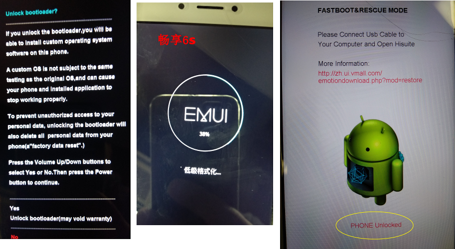
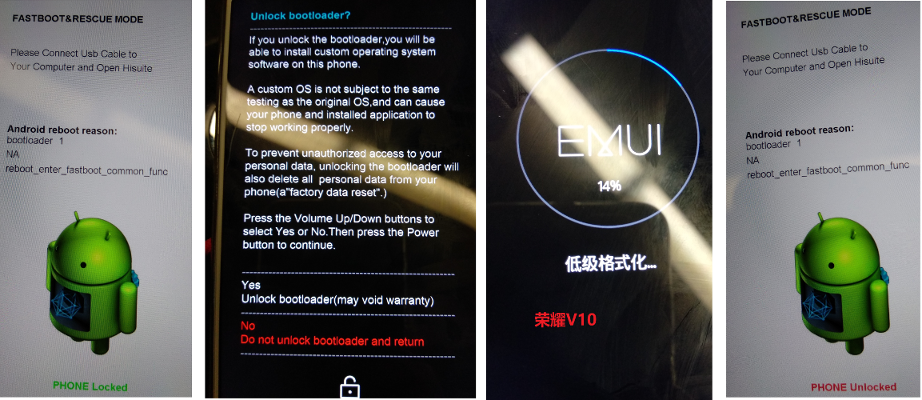

华为手机解锁、root
- 参考
解锁地址
- https://www.emui.com/plugin.php?id=unlock&mod=unlock&action=apply
- http://www.emui.com/plugin.php?id=unlock
- https://www.emui.com/cn/plugin/unlock/index
华为 2018-05-24公告：对所有2018年5月24日后新上市产品停止解锁码服务，已经上市产品自公告发布之日起60天后停止解锁码服务。
解锁
- 参考
- 测试通过
- 畅享6s
- 荣耀V10
-
获取解锁码
- 用华为账号在新手机登录使用华为云服务14天，才可以申请解锁码。
- 登录 http://www.emui.com/plugin.php?id=unlock 获取解锁码
-
打开开发者模式
-
进入 fastboot 模式
方法1：关机状态下，同进按下：音量减键和开机键，进入fastboot刷机模式，用数据线连接电脑。
方法2：1
adb reboot bootloader
手机重启后进入 fastboot 模式
-
检查fastboot模式下是否能识别手机，
fastboot devices1 2
C:\Users\jack>fastboot devices DWH9X19320S05914 fastboot
如果无法列出连接的设备，很可能驱动没有。可以先安装下华为的手机助手 HiSuite。
-
解锁
1 2 3 4 5 6 7
fastboot oem unlock <解锁码> ... 手机上显示确认界面，使用音量键选择 YES ,电源键确认，解锁成功后，开始低级格式化。 (bootloader) Unlock success , the device will reboot and factory reset OKAY [ 62.000s] finished. total time: 62.003s注意：解锁完成后，华为直接进行 低级格式化，数据全没。

 -
打开开发者模式
-
检查解锁是否成功。
adb reboot bootloader，重启后界面上Android机器人下面显示“PHONE Unlocked”
fastboot oem get-bootinfo，显示(bootloader) Lock state is unlock
畅享6s ROOT （未成功，待续）
- 参考
前提：手机已解锁
- 刷入第三方 Recovery（此处使用TWRP，其他recovery还有：CWM）
- 下载recovery工具包
TWRP-recovery-new.img20.9 MB (21,972,992 字节)
https://pan.baidu.com/s/1bQkBvS - 进入 fastboot 模式：
adb reboot bootloader - 检查手机是否连接正常：
fastboot devices
没有显示设备，检查驱动是否安装正确。 - 安装TWRP Recovery：
fastboot flash recovery TWRP-recovery-new.img1 2 3 4 5 6 7 8
fastboot flash recovery TWRP-recovery-new.img target reported max download size of 532676608 bytes sending 'recovery' (21458 KB)... OKAY [ 0.735s ] writing 'recovery'... OKAY [ 0.655s ] finished. total time: 1.396s
- 重启
fastboot reboot
- 下载recovery工具包
- 刷入 su 工具包（未成功）
- SuperSu （未成功）
- Root-SuperSU-v2.71.zip
- 拷贝 SuperSu 的zip包
- 进入 recovery 模式：
adb reboot recovery - 进入 TWRP 界面，选择“安装”，浏览文件系统，选择 zip 文件
- 安装完成，重启手机。
- 【失败】手机无法启动，一直停留在华为菊花启动屏幕。
- SuperSU-v2.79-201612051815.zip
-
【失败】启动后，执行
adb shell su，提示 not found
刷SuperSu root包时，疑似有错误：1 2 3 4 5 6 7
******************* Boot image patcher ******************* - Finding boot image --- Boot image: /dev/block/mmcblk0p30 - Extracting ramdisk --- Failure, aborting
-
- Root-SuperSU-v2.71.zip
- KingRoot （未成功）
- 进入 TWRP 界面，选择“安装” 》 “刷入Image”
- 选择之前拷贝到手机根目录的 boot.img 文件
- 选择要刷入镜像的分区：Boot
- 滑动确认刷入
- 刷入成功，返回到文件选择界面，点击 “安装zip包”
- 选择之前拷贝到手机根目录的 kingroot.zip 文件
- 滑动确认刷入
-
【失败】刷完重启，su 命令执行很长时间后，返回：”Connection to ui timed out”
刷boot.img包时，疑似有错误：1 2 3 4 5 6 7
******************* Boot image patcher ******************* - Finding boot image --- Boot image: /dev/block/mmcblk0p30 - Extracting ramdisk --- Failure, aborting
-
虽然2种boot包都失败，但是系统的root状态已经从UNROOT 变为 ROOT
进入 fastboot 模式查看是否是root状态
1 2
adb reboot bootloader fastboot oem get-bootinfo
1
Root State: ROOT # 原来是 UNROOT
- SuperSu （未成功）
畅享6s 刷机
同时按下【音量上】【开机键】，启动进入 TWRP
- 用 TWRP recovery 刷入如下的zip包就好了。
荣耀V10 Root
附录
手动进入 recovery 模式
先把手机关机，然后手机在关机的状态下按住手机的
“音量上键” + “电源键” 不放，过一会手机即可进入recovery的界面：